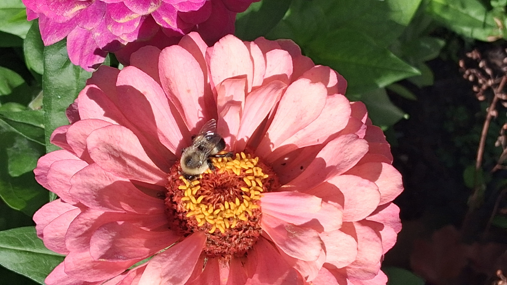

Hello! I am a student at Algonquin College, located in Ottawa,Ontario, Canada.
Currently I am 24 years young! Not that old, huh? My birthday was last week, on the 21st and it was unplanned and fun.
I never got the oportunity to celebrate my birthday with friends, so this was the time!
I have been in Algonquin for a couple of years looking for a strong foundation that will help me succeed in my career. Being a student
is not bad but that is not all that I do, I actually enjoy church!
Sometimes young adults do not focus on spiritual growth. And since I am a Christian, I find reliability in my own bible, here is a quote that I identify with:
"And since we are His children,we are His heirs. In fact, together with Christ we are heirs of God's glory. But if we are to share His glory, we must also share His sufferings."Holy Bible (NLT), Romans 8:17
Note:The NLT is a popular translation of the Bible, make sure you ckeck it!
I have to mention that I am so obsessed with bees! And actually, here is a picture of one:

"Pardon the weeds, we are feeding the bees."Popular garden sign slogan
Is this website cool? If you are wondering how I created it, have a look at what I have been learning!